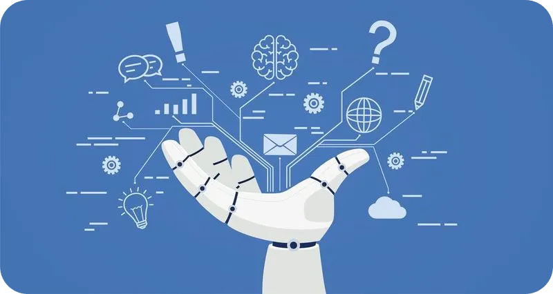

A Inteligência Artificial na Educação
A Inteligência Artificial na Educação é um assunto que vem cada vez mais sendo debatido nos dias de hoje. Mas não dá pra negar. Seu uso nos dias de hoje já é uma realidade.
Essa foi uma ação que aconteceu de forma natural. Isso se deve ao fato de que a inteligência artificial é uma tecnologia que facilita a execução de diversas tarefas de maneira simples e eficiente. Além disso, a inovação se aprimora continuamente, disponibilizando novos recursos e ampliando ainda mais as possibilidades. No sentido educacional, a IA está se tornando cada vez mais integrada ao dia a dia de professores, estudantes e até administradores e coordenadores acadêmicos.
Por um lado, a Inteligência Artificial tem trazido melhorias para o processo educacional, por outro ela também traz riscos e desafios para as escolas. Então, qual é o impacto disso no futuro da educação? Debates sobre o assunto geram uma variedade de inquietações, indagações e oportunidades.
Neste site, iremos falar sobre suas aplicações, vantagens e desvantagens! Não esqueça de checar e preencher o formulário que disponibilizamos no rodapé do site!

As Vantagens de seu uso na Educação
A Inteligência Artificial na Educação é um assunto que vem cada vez mais sendo debatido nos dias de hoje. Mas não dá pra negar. Seu uso nos dias de hoje já é uma realidade.
Essa foi uma ação que aconteceu de forma natural. Isso se deve ao fato de que a inteligência artificial é uma tecnologia que facilita a execução de diversas tarefas de maneira simples e eficiente. Além disso, a inovação se aprimora continuamente, disponibilizando novos recursos e ampliando ainda mais as possibilidades. No sentido educacional, a IA está se tornando cada vez mais integrada ao dia a dia de professores, estudantes e até administradores e coordenadores acadêmicos.
Por um lado, a Inteligência Artificial tem trazido melhorias para o processo educacional, por outro ela também traz riscos e desafios para as escolas. Então, qual é o impacto disso no futuro da educação? Debates sobre o assunto geram uma variedade de inquietações, indagações e oportunidades.
Neste site, iremos falar sobre suas aplicações, vantagens e desvantagens! Não esqueça de checar e preencher o formulário que disponibilizamos no rodapé do site!